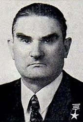

Выпускники и сотрудники Института, удостоенные званий Героя Советского Союза и Героя Российской Федерации.
 Герой Советского Союза
Герой Советского СоюзаИван Андреевич Анкудинов
Иван Андреевич Анкудинов
Родился 14 сентября 1906 года в селе Липяги Мордовские Волжского района Самарской области. Участник Великой Отечественной войны с 7 июля 1941 года, сражался на Западном фронте в составе 18-го погранотряда. Командир 1157-го стрелкового полка 351-й стрелковой дивизии 18-й армии 4-го Украинского фронта, отличился в боях в Закарпатье. Его полк с 26 октября по 30 ноября 1944 года участвовал в освобождении городов Мукачево, Ужгород (Закарпатская область), форсировал водные преграды и штурмом овладел населенными пунктами Стретава, Палин и др. Полком было уничтожено и взято в плен большое количество солдат и офицеров противника. 30 ноября 1944 года погиб в бою на подступах к г. Требишов (Чехословакия). Звание Героя Советского Союза присвоено 24 марта 1945 года посмертно. Награжден орденами Ленина, Красного Знамени, Суворова 3-й степени, Отечественной войны 1-й степени, тремя орденами Красной Звезды, медалями.
Герой Советского Союза
Юрий Васильевич Бабанский
Юрий Васильевич Бабанский
Родился 20 декабря 1948 года в городе Кемерово. После окончания девяти классов поступил в Кемеровское городское профтехучилище № 3. Проходил службу в подразделениях, непосредственно охраняющих государственную границу. Входил в состав команды пограничного отряда по пулевой стрельбе. Участвовал в боевых действиях на о. Даманский на советско-китайской границе. После гибели начальника пограничной заставы младший сержант Бабанский Ю.В. возглавил группу пограничников и лично руководил боем по ликвидации вторгнувшихся на о. Даманский нарушителей. Группе Ю. Бабанского удалось отбить несколько атак. В 1985 году был командирован в Демократическую Республику Афганистан. Звание Героя Советского Союза присвоено 21 марта 1969 года. Награжден орденом Ленина и медалью «Золотая Звезда», орденом «Знак Почета». Один из первых кавалеров знака Центрального Комитета ВЛКСМ «Воинская доблесть» и нагрудного знака «Отличник погранвойск» 1-й степени.
 Герой Советского Союза
Герой Советского СоюзаНиколай Александрович Беляков
Николай Александрович Беляков
Родился 8 апреля 1908 года в деревне Пронинская Красноборского района Архангельской области. В боях с немецко-фашистскими захватчиками Беляков участвовал в составе частей морской пехоты на Черном море. С 1942 года Н.А. Беляков – начальник штаба 8-го отдельного стрелкового батальона Потийской военно-морской базы, затем – 325-го батальона морской пехоты. С октября 1943 года командовал 386-м отдельным батальоном морской пехоты, отличившимся во многих боях. Звание Героя Советского Союза присвоено 17 ноября 1943 года. Награжден орденом Ленина и медалью «Золотая Звезда», орденами Красного Знамени (дважды), Красной Звезды, Отечественной войны 1-й степени и многими медалями.
 Герой Советского Союза
Герой Советского СоюзаСергей Александрович Блинников
Сергей Александрович Блинников
Родился 20 декабря 1907 года в городе Старая Русса Новгородской области. Командир 107-го Келецкого ордена Красной Звезды отдельного моторизованного штурмового инженерно-саперного батальона 23-й Перекопской Краснознаменной ордена Суворова моторизованной штурмовой инженерно-саперной бригады 13-й армии 1-го Украинского фронта майор Блинников С.А. в конце января 1945 года в числе первых форсировал Одер южнее г. Штейнау (Польша) и обеспечил переправу по льду стрелковым частям и подразделениям. Был ранен, но поле боя не покинул. Звание Героя Советского Союза присвоено 10 апреля 1945 года. Награжден 2 орденами Ленина, 2 орденами Красного Знамени, 2 орденами Отечественной войны 1-й степени, 3 орденами Красной Звезды, медалями.
Герой Советского Союза
Семен Григорьевич Жогов
Семен Григорьевич Жогов
Родился 17 ноября 1923 года в селе Троицкое Новохоперского района Воронежской области. Участник Великой Отечественной войны с октября 1942 года. Разведчик, комсорг сводного кавалерийского эскадрона 354-й Калинковичской ордена Ленина Краснознаменной ордена Суворова стрелковой дивизии 105-го Краснознаменного стрелкового корпуса 65-й армии 2-го Белорусского фронта ефрейтор Жогов С.Г. в ночь на 20 апреля 1945 года в группе разведчиков преодолел р. Вест-Одер в районе населенного пункта Нидерцаден (5 км южнее г. Щецин, Польша) и уничтожил вражеский пулеметный расчет. Определил удобное для высадки десанта место. Вместе с бойцами отбил несколько контратак противника, взял в плен до двух десятков солдат. Звание Героя Советского Союза присвоено 29 июня 1945 года. Награжден орденами Ленина, Отечественной войны 1-й степени, Красной Звезды, «За службу Родине в Вооруженных Силах СССР» 3-й степени, Славы 3-й степени, медалями, а также почетным знаком «Заслуженный работник МВД СССР».
Герой Советского Союза
Иван Петрович Зарубин
Иван Петрович Зарубин
Родился 14 января 1908 года в селе Гусынка Обливского района Ростовской области. В боях Великой Отечественной войны с июля 1941 года. Заместитель командира 22-й гвардейской мотострелковой бригады 6-го гвардейского Киевско-Берлинского Краснознаменного, орденов Суворова и Богдана Хмельницкого танкового корпуса 3-й гвардейской танковой армии 1-го Украинского фронта гвардии майор Зарубин И.П. 21 апреля 1945 года в боях на подступах к Берлину принял командование бригадой. 25 апреля вместе с бойцами форсировал канал Тельтов. Умело организовал переправу частей бригады и приданных средств усиления и завязал бой с противником на окраине Берлина. В этих боях противнику был нанесен значительный урон в живой силе и боевой технике. Звание Героя Советского Союза присвоено 27 июня 1945 года. Награжден орденом Ленина, 3 орденами Красного Знамени, орденами Александра Невского, Отечественной войны 1-й степени, 2 орденами Красной Звезды, медалями.
Герой Советского Союза
Николай Васильевич Калуцкий
Николай Васильевич Калуцкий
Родился 19 декабря 1919 года на хуторе Пролетарском Кореновского района Краснодарского края. Участник Великой Отечественной войны с июня 1941 года Командир 1229-го Краснознаменного гаубичного артиллерийского полка 58-й тяжелой гаубичной артиллерийской бригады 18-й Краснознаменной Гатчинской ордена Суворова артиллерийской дивизии 3-го артиллерийского корпуса прорыва РВГК 65-й армии 2-го Белорусского фронта капитан Калуцкий Н.В. 29 января 1945 года на вислинском плацдарме в районе города Грудзендз (Польша) артиллерийским огнем поддерживал отражение контратаки противника. Управляя огнем с наблюдательного пункта, находившегося впереди боевых порядков пехоты, в критические моменты боя дважды вызывал огонь на себя. Звание Героя Советского Союза присвоено 10 апреля 1945 года. Почетный гражданин города Дербент. Награжден орденом Ленина, 2 орденами Отечественной войны 1-й степени, орденом Отечественной войны 2-й степени, 2 орденами Красной Звезды, медалями.
 Герой Советского Союза
Герой Советского СоюзаВиктор Дмитриевич Капшук
Виктор Дмитриевич Капшук
Родился 15 июля 1965 года в селе Карапыши Мироновского района Киевской обл. В 1983 году был призван на действительную военную службу в пограничные войска. С мая 1984 года по декабрь 1985 год – в десантно-штурмовой маневренной группе 47-го Керкинского пограничного отряда, которая действовала в северных районах Афганистана. Принимал участие в боевых операциях. Был контужен. Несмотря на это, он в последующем решил связать свою жизнь с границей – стать офицером-пограничником. Звание Героя Советского Союза присвоено 6 ноября 1985 года за мужество и героизм, проявленные при осуществлении боевых операций по оказанию интернациональной помощи Республике Афганистан. Награжден орденом Ленина и медалью «Золотая Звезда», многими медалями, нагрудными знаками «Отличник погранвойск» 1-й и 2-й степеней, Почетным знаком ВЛКСМ и знаком Центрального Комитета ВЛКСМ «Воинская доблесть».
 Герой Советского Союза
Герой Советского СоюзаАлексей Иванович Киреев
Алексей Иванович Киреев
Родился 8 марта 1908 года в деревне Новоалексеевка Москаленского района Омской области. На фронтах Великой Отечественной войны с июля 1942 года. Командир 809-го штурмовою авиационного полка 264-й штурмовой авиационной дивизии 5-го штурмового авиационного корпуса 5-й воздушной армии 2-го Украинского фронта подполковник Киреев А.И. к ноябрю 1944 года совершил 131 боевой вылет на бомбардировку и штурмовку живой силы и техники противника, из них 28 – с посадкой в его тылу. Уничтожил и повредил 16 танков, 41 автомашину, 6 минометных точек, 2 самолета, 4 склада с боеприпасами, 10 укрепленных узлов и дзотов. Звание Героя Советского Союза присвоено 15 мая 1946 года. Награжден орденом Ленина, 2 орденами Красного Знамени, орденами Александра Невского, Отечественной войны 3-й степени, Красной Звезды, медалями.
 Герой Советского Союза
Герой Советского СоюзаФеодосий Павлович Коренчук
Феодосий Павлович Коренчук
Родился 11 января 1917 года в селе Татариновка Сквирского района Киевской области. Участник советско-финляндской войны 1939–1940 гг. Зам. политрука саперного взвода 4-го погранотряда политрук Коренчук Ф.П. в составе группы 17 января 1940 года штыковой атакой обратил в бегство противника. Звание Героя Советского Союза присвоено 26 апреля 1940 года. В 1941 году окончил военно-политическое училище. Участник Великой Отечественной войны, был помощником начальника политотдела армии по комсомольской работе, заместителем командира полка по политчасти. Награжден орденами Ленина, Отечественной войны 1-й степени, 4 орденами Красной Звезды, медалями.
Герой Советского Союза
Иван Данилович Кудря
Иван Данилович Кудря
Родился 7 июля 1912 года в селе Сальково Бориспольского района Киевской области. С 1934 года в органах НКВД, служил в пограничных войсках и в аппарате НКВД УССР. В годы Великой Отечественной войны лейтенант Кудря И.Д. находился в оккупированном гитлеровцами Киеве. В 1941–1942 гг. принимал участие в подготовке и боевых операциях 7 диверсионных групп. В результате противник понес большой урон в живой силе и боевой технике. В июле 1942 года Кудря И.Д. был схвачен гитлеровцами и погиб в фашистских застенках. Звание Героя Советского Союза присвоено 8 мая 1965 года посмертно. Награжден орденом Ленина.
Герой Советского Союза
Гавриил Васильевич Кузякин
Гавриил Васильевич Кузякин
Родился 29 августа 1916 года в деревне Клишино Курской области. В пограничных войсках с 1937 года. Участник советско-финляндской войны 1939–1940 гг. Снайпер 5-го пограничного полка комсомолец рядовой Кузякин Г.В. в январе 1940 года в составе группы советских воинов в течение 13 дней вел бой с превосходящими силами противника. Возглавив группу, вывел ее в расположение полка. Звание Героя Советского Союза присвоено 26 апреля 1940 года. Награжден орденами Ленина, Красного Знамени, Отечественной войны 1-й и 2-й степеней, Красной Звезды, медалями.
Герой Советского Союза
Николай Николаевич Лукашов
Николай Николаевич Лукашов
Родился 12 октября 1959 года в селе Новомосковка Тарского района Омской области. С апреля 1985 года – командир взвода, начальник заставы, начальник штаба десантно-штурмовой маневренной группы 47-го Керкинского Краснознаменного пограничного отряда Краснознаменного Среднеазиатского пограничного округа. С 1987 года – офицер штаба оперативной группы Краснознаменного Среднеазиатского пограничного округа. В Афганистане он принимал участие в 23 крупных боевых операциях, более 70 раз десантировался в расположение противника. Звание Героя Советского Союза присвоено капитану Лукашову Н.Н. 17 марта 1988 года за мужество и героизм, проявленные при осуществлении боевых операций по оказанию интернациональной помощи Республике Афганистан. Награжден орденом Ленина и медалью «Золотая Звезда», орденами Красного Знамени, Красной Звезды, «За службу Родине в Вооруженных Силах СССР» 3-й степени, медалями «За боевые заслуги», «За отличие в охране государственной границы СССР».
Герой Советского Союза
Федор Федорович Озмитель
Федор Федорович Озмитель
Родился 13 августа 1918 года в поселке Линовицк Мартукского района Актюбинской области Казахской ССР. Участник Великой Отечественной войны с 1941 года. С февраля 1942 года партизанский отряд «Грозный» под командованием старшего лейтенанта Озмителя Ф.Ф. действовал в районе городов Орша, Витебск, Смоленск. Партизаны подорвали 27 эшелонов с живой силой и техникой, 45 автомашин, 3 моста, неоднократно перерезали подземный кабель связи «фронт – Берлин». В июне 1944 года, командуя штурмовой группой по прорыву окружения близ озера Палик (Борисовский район Минской области), был тяжело ранен и 15 июня 1944 года подорвал связкой гранат себя и окруживших его гитлеровцев. Звание Героя Советского Союза присвоено 5 ноября 1944 года посмертно. Награжден орденом Ленина и медалью «Золотая Звезда» (посмертно), орденом Отечественной войны 2-й степени, медалью.
Герой Советского Союза
Константин Иванович Ракутин
Константин Иванович Ракутин
Родился 21 мая 1902 года в селе Новинки Вачского района Нижегородской области. Участник Гражданской войны и боев против белогвардейских банд на Дальнем Востоке. В должности помощника, командующего войсками 15-й армии по охране тыла участвовал в советско-финляндской войне 1939–1940 гг. Участник Великой Отечественной войны с июня 1941 года С 26 июня 1941 год – начальник охраны тыла войск Северо-Западного фронта. В ходе первых боев возглавил 31-ю армию резерва Ставки Верховного Главнокомандования, формировавшуюся в Московском военном округе. С июля 1941 года – командующий 24-й армией Фронта резервных армий (с 30 июля – Резервного фронта). Участник Смоленского сражения. Под его руководством войска 24-й армии в Ельнинской наступательной операции (30 августа – 8 сентября 1941 года) прорвали оборону врага, разгромили крупную группировку фашистских войск и освободили город Ельню. Звание Героя Советского Союза присвоено 5 мая 1990 года посмертно. Награжден орденом Ленина и медалью «Золотая Звезда» (посмертно), орденами Отечественной войны 1-й степени (посмертно), Красной Звезды, медалью «ХХ лет РККА», знаком «Почетный работник ВЧК-ОГПУ (XV)» и именным оружием (дважды).
Герой Советского Союза
Александр Александрович Ройченко
Александр Александрович Ройченко
Родился 9 октября 1911 года в селе Хотень Сумского района Сумской области. На фронте в Великую Отечественную войну с 1942 года. Командир минометной роты 1033-го стрелкового полка 280-й Конотопской Краснознаменной стрелковой дивизии 60-й армии Центрального фронта старший лейтенант Ройченко А.А. в составе штурмовой группы 26 августа 1943 года преодолел Днепр в районе села Страхолесье (Чернобыльский район Киевской области). Минометчики способствовали стрелковым подразделениям в захвате плацдарма. 29 сентября участвовал в отражении 2 контратак противника и в атаке по расширению плацдарма. Был ранен в бою и умер 5 октября 1943 года. Звание Героя Советского Союза присвоено 17 октября 1943 года. Награжден орденом Ленина.
Герой Советского Союза
Николай Матвеевич Руденко
Николай Матвеевич Руденко
Родился 31 декабря 1906 года в селе Климовка Сватовского района Луганской области. Участвовал в боевых действиях в составе 3-го пограничного полка во время советско-финляндской войны. На фронтах Великой Отечественной войны с июля 1941 года. Принимал участие в разведывательно-диверсионных операциях под Москвой. Сражался с фашистами на Ленинградском, Западном, Волховском фронтах. Был четырежды ранен. Звание Героя Советского Союза присвоено 26 августа 1941 года. Награжден орденом Ленина и медалью «Золотая Звезда», орденом Красной Звезды (дважды), многими медалями.
Герой Советского Союза
Николай Васильевич Старшинов
Николай Васильевич Старшинов
Родился 5 марта 1915 года в деревне Поспелиха Варнавинского района Нижегородской области. В боях Великой Отечественной войны с 1941 года. Заместитель командира 393-го Новороссийского отдельного батальона морской пехоты по политчасти Черноморского флота майор Старшинов Н.В. в период Новороссийской десантной операции 10 августа 1943 года во главе группы бойцов свыше 3 часов вел бой с превосходящими силами противника, подбив 7 вражеских танков, уничтожив много гитлеровцев. Звание Героя Советского Союза присвоено 22 января 1944 года. Награжден орденом Ленина, 2 орденами Красного Знамени, орденом Суворова 3-й степени, Отечественной войны 1-й степени, 2 орденами Красной Звезды, медалями.
Герой Советского Союза
Николай Иванович Сташек
Николай Иванович Сташек
Родился 18 апреля 1914 года на хуторе Мариновском Беляевского района Одесской области. Его боевой путь начался осенью 1941 года под Москвой. Начальником оперативного отделения штаба 74-й стрелковой дивизии участвовал в наступлении Красной Армии под Воронежем и Касторной. В 28 лет он стал командиром 360-го стрелкового полка этой дивизии. От Орла до Десны и Днепра с боями провел он свой полк. Был трижды ранен и дважды контужен. Войну закончил в Прибалтике. Занимался литературной деятельностью. Автор нескольких книг о Великой Отечественной войне. Звание Героя Советского Союза присвоено 16 октября 1943 года. Награжден орденом Ленина и медалью «Золотая Звезда», орденами Красного Знамени (дважды), Суворова 3-й степени, Отечественной войны 1-й степени, Красной Звезды и многими медалями. Также был удостоен награждения одним из высших орденов ГДР.
Герой Советского Союза
Петр Федорович Терешкин
Петр Федорович Терешкин
Родился 1 июля 1907 года в поселке Колышлей Пензенской области. В 1936 году назначен начальником заставы «Подгорная» 59-го Посьетского пограничного отряда Дальневосточного пограничного округа войск НКВД СССР. 31 июля 1938 года участвовал в отражении нападения японо-маньчжурских войск на высоту «Заозерная» у озера Хасан. В неравном бою был восемь раз ранен. Великую Отечественную войну встретил на западной границе. Отходя по тылам противника на соединение со своими войсками, в августе 1941 года Петр Терешкин на территории Смоленской области организовал партизанский отряд и воевал в тылу врага до 1944 года. В боях был контужен. В 1944 году назначен командиром батальона 390-го восстановительного строительного полка. Звание Героя Советского Союза присвоено 25 октября 1938 года. Награжден орденом Ленина и медалью «Золотая Звезда», орденами Красного Знамени, Красной Звезды, медалями «За боевые заслуги», «Партизану Великой Отечественной войны» и другими. Был удостоен почетного звания «Заслуженный работник МВД СССР».
Герой Советского Союза
Василий Андреевич Трушин
Василий Андреевич Трушин
Родился 7 мая 1906 года в селе Тацино Ровеньковского горсовета Луганской области. На фронте в Великую Отечественную войну с 1941 года. Командир 61-го гвардейского стрелкового полка 19-й гвардейской стрелковой дивизии 39-й армии 3-го Белоруского фронта гвардии подполковник Трушин В.А. отличился в боях на подступах к Кенигсбергу (Калининград). 23 февраля 1945 года в районе населенного пункта Пилькаллен его полк, прорвав оборону противника, первым переправился на западный берег реки Дайме. Погиб в этом бою. Звание Героя Советского Союза присвоено 29 июня 1945 года посмертно. Награжден орденами Ленина (посмертно), Красного Знамени (трижды), Александра Невского, Отечественной войны 1-й степени, Красной Звезды, медалями.
Герой Советского Союза
Борис Филиппович Шейко
Борис Филиппович Шейко
Родился 10 апреля 1905 года в селе Кода Тетрицкаройского района Грузинской ССР. На фронте в Великую Отечественную войну с августа 1941 года. Агитатор 43-го Даурского стрелкового полка 106-й стрелковой дивизии 65-й армии Центрального фронта майор Шейко Б.Ф. организовал 15 октября 1943 года форсирование Днепра вторым эшелоном полка в районе пгт. Лоев Гомельской области. На захваченном плацдарме возглавил отражение полком 7 контратак пехоты и танков противника. Звание Героя Советского Союза присвоено 30 октября 1943 года. Награжден 2 орденами Ленина, орденами Красного Знамени, Отечественной войны 1-й степени, 2 орденами Красной Звезды, медалями.
Герой Советского Союза
Иван Иванович Шиянов
Иван Иванович Шиянов
Родился 19 октября 1905 года в селе Палец Перевозского района Нижегородской области. В 1939 году призван на службу. В составе 136-й стрелковой дивизии, сформированной в г. Горьком, участвовал в советско-финляндской войне. Командовал батальоном. С сентября 1942 года воевал на Северо-Кавказском и Воронежском фронтах. Был назначен начальником оперативного отделения штаба стрелковой дивизии, а в сентябре 1943 года – командиром 225-го стрелкового полка. Отличился при форсировании Днепра в районе Канева. В бою на плацдарме был ранен. Звание Героя Советского Союза присвоено 25 октября 1943 года. Награжден орденом Ленина (дважды) и медалью «Золотая Звезда», орденами Красного Знамени, Красной Звезды и многими медалями.
Герой Социалистического Труда
Степан Степанович Витченко
Степан Степанович Витченко
Родился 26 января 1909 года в Харьковской губернии. Участник Великой Отечественной войны, полковник Витченко С.С. при сокращении Вооруженных Сил в 1955 году был уволен в запас. 17 лет был бригадиром слесарей-сборщиков Ленинградского производственного объединения «Электросила» имени С.М. Кирова. Первоначально возглавлял бригаду из офицеров запаса. «Полковничья бригада», как ее называли в шутку, стала одной из лучших на предприятии. О ней писали, говорили, ее опыт изучали. Степан Степанович лично внес более 30 рационализаторских предложений. Автор книги «Дорогие мои мальчишки», выдержавшей два издания. Деятельности бригады С.С. Витченко посвящен документальный фильм «Восемнадцать моих мальчишек» (1967 г.). Герой Социалистического Труда С.С. Витченко является прообразом главного героя художественного фильма «Полковник в отставке» (1975 г.). Звание Героя Социалистического Труда присвоено 23 апреля 1974 года. Награжден орденами Ленина и Золотой медалью «Серп и Молот», Октябрьской Революции, Отечественной войны 1-й степени, Красного Знамени, Красной Звезды, а также многими медалями, в том числе «За боевые заслуги».
Герой Социалистического Труда
Евгений Лукьянович Овчар
Евгений Лукьянович Овчар
Родился 17 января 1917 года в селе Адамовка Любашевского района Одесской области. Участвовал в советско-финляндской войне. В начале Великой Отечественной войны старшина Евгений Овчар в составе 33-го пограничного отряда НКВД на Ленинградском фронте. 18 августа 1941 года особо отличился при отражении нападения на командный пункт отряда. Проник в расположение артиллерийской батареи противника, уничтожил расчеты противника и развернул орудия против врага. Участвовал в прорыве блокады Ленинграда, освобождении Прибалтики, взятии Кенигсберга. Войну закончил в районе Франкфурта-на-Одере. В 1945–1948 гг. служил на территории Германии. В 1960 году был избран председателем колхоза и вывел хозяйство в передовые. Колхоз стал миллионером. Были построены дворец культуры, две средние школы, узел связи, дом быта, магазин, дома для колхозников. Звание Героя Социалистического Труда присвоено 31 декабря 1965 года. Награжден орденами Ленина и Золотой медалью «Серп и молот», орденами Октябрьской Революции, Красного Знамени, Отечественной войны 1-й степени (дважды), Отечественной войны 2-й степени, Трудового Красного Знамени, Красной Звезды, а также медалями, в том числе «За оборону Ленинграда», «За взятие Кенигсберга», Почетной грамотой Президиума Верховного Совета Украинской ССР.
Герой Российской Федерации
Руслан Владимирович Кокшин
Руслан Владимирович Кокшин
Родился 7 мая 1979 года в городе-герое Туле. С сентября 2001 года – командир минометного взвода десантно-штурмовой маневренной группы Итум-Калинского (Аргунского) пограничного отряда Северо-Кавказского регионального управления Федеральной пограничной службы Российской Федерации. 27 июля 2002 года пограничники 9-й заставы «Грозтхой» Итум-Калинского пограничного отряда обнаружили лагерь боевиков и вступили с ними в бой. Старший лейтенант Кокшин Р.В. во главе разведывательно-поисковой группы был десантирован на участок пограничной заставы. Преследуя боевиков, разведывательно-поисковая группа попала в засаду и подверглась массированному обстрелу. Старшему лейтенанту Кокшину Р.В. удалось вывести группу из-под огня противника. Р.В. Кокшин с бойцами оказался зажатым снизу и сверху под гребнем крутого склона на высоте около 2 000 м. Старший лейтенант Кокшин Р.В. под шквальным огнем врага умело руководил боем, управлял действиями солдат. Огнем из автомата и подствольного гранатомета лично подавил три вражеские огневые точки. После многочасового боя противник почти вплотную приблизился к позициям пограничников, у которых заканчивались боеприпасы. Ввиду возникшей угрозы захвата группы в плен и прорыва бандитов старший лейтенант Кокшин Р.В. вызвал огонь минометного взвода на себя. Во время обстрела он корректировал стрельбу минометчиков, был контужен, но продолжал управлять боем. Точные разрывы мин сковали действия боевиков и обеспечили подход резерва отряда. Звание Героя Российской Федерации присвоено 9 декабря 2002 года. Награжден медалями «Золотая Звезда» и «За отличие в охране государственной границы», ведомственными наградами.
Герой Российской Федерации
Игорь Валерьевич Марьенков
Игорь Валерьевич Марьенков
Родился 9 мая 1975 года в городе Лабинске Краснодарского края. В 1996 году окончил с отличием Голицынский военный институт Пограничных войск Российской Федерации. Офицерскую службу начал в Назрановском пограничном отряде (Республика Ингушетия) начальником отдельной группы специальной разведки. В июле 2006 года призвался в органы федеральной службы безопасности и был зачислен в штат Управления «А» Центра специального назначения ФСБ России. Неоднократно участвовал в сложных оперативно-боевых мероприятиях в Северо-Кавказском регионе, выполнял специальные задачи по противодействию угрозам, исходившим от международных террористических организаций, в том числе за пределами России. В 2015 году подполковник И.В. Марьенков получил тяжелое боевое ранение. Погиб 16 июня 2016 года при проведении спецоперации в Дагестане по уничтожению банды «Абу Ясира» и главаря диверсионно-террористической группы «Южная» Гасана Абдуллаева. Ликвидация этих бандитов явилась одной из крупнейших специальных операций последних лет на Северном Кавказе. Приказом Директора ФСБ России подполковник И.В. Марьенков навечно зачислен в списки Центра специального назначения ФСБ России. Звание Героя Российской Федерации присвоено 13 июля 2016 года. (посмертно). Награжден медалью «Золотая Звезда» (посмертно), орденами Мужества (дважды), медалью ФСБ России «За доблесть» с изображением серебряного креста и мечей, медалью иностранного государства, а также другими ведомственными наградами.
Герой Российской Федерации
Александр Анатольевич Матовников
Александр Анатольевич Матовников
Родился 19 сентября 1965 года в городе Москве. В октябре 1986 года был направлен в Афганистан на трехмесячную стажировку, он действовал в составе десантно-штурмовой маневренной группы пограничных войск в районах Шибиргана и Файзабада. В 1987–1988 гг. дважды был командирован в США для обеспечения безопасности Генерального секретаря ЦК КПСС М.С. Горбачева во время его государственных визитов. В 1992 году окончил Академию Министерства безопасности Российской Федерации (ныне – Академия ФСБ России). После окончания учебы продолжил службу в Группе «А». В составе «Альфы» прошел две боевые кампании на Северном Кавказе. Принимал участие в операциях по освобождению заложников и нейтрализации террористов. В сентябре 2004 года в ходе событий в Беслане налаживал взаимодействие с органами власти и силовыми подразделениями, руководил группой управления. Во второй чеченской кампании Управление «А» Центра специального назначения ФСБ России действовало не только в Чечне, но и в Ингушетии, Дагестане, Кабардино-Балкарии. А.А. Матовников был в составе управленческих органов спецподразделения. С 2000 года с коллегами обеспечивал личную безопасность первого президента Чеченской Республики А. Кадырова. С 2007 года А.А. Матовников проходил службу в должности первого заместителя начальника Управления «А» Центра специального назначения ФСБ России. В 2014 году А.А. Матовников был переведен в Министерство обороны Российской Федерации и назначен на должность заместителя командира Сил специальных операций Главного (разведывательного) управления Генерального штаба Вооруженных Сил Российской Федерации. В 2015 году был назначен командиром Сил специальных операций – заместителем начальника ГУ ГШ ВС России. Одной из ключевых зон ответственности на новой должности стала Сирийская Арабская Республика. 26 июня 2018 года Президентом Российской Федерации В.В. Путиным был подписан Указ о назначении А.А. Матовникова полномочным представителем Президента Российской Федерации в Северо-Кавказском федеральном округе. В январе 2020 года генерал-лейтенант А.А. Матовников назначен заместителем Главнокомандующего Сухопутными войсками Вооруженных Сил Российской Федерации. Звание Героя Российской Федерации присвоено в 2017 году. Награжден медалью «Золотая Звезда», орденами «За заслуги перед Отечеством» 4-й степени (с изображением мечей), Александра Невского, Мужества (дважды), «За военные заслуги», медалями Суворова, Жукова, ведомственными медалями и знаками отличия.
Герой Российской Федерации
Михаил Анатольевич Мясников
Михаил Анатольевич Мясников
Родился 23 апреля 1975 года в городе Сельцо Брянской области. В 1996 году с отличием окончил Голицынский военный институт Пограничных войск Российской Федерации. Был направлен в Северо-Кавказское региональное управление Федеральной пограничной службы Российской Федерации и назначен на должность заместителя начальника пограничной заставы «Куруш» Ахтынского пограничного отряда (Республика Дагестан). После пяти лет службы в пограничных войсках стал сотрудником Управления «В» («Вымпел») Центра специального назначения ФСБ России. В апреле 2002 года М.А. Мясников был зачислен в «горное» отделение 4-го отдела Управления «В». В 2004 году в г. Беслане участвовал в составе штурмовой группы в уничтожении в помещении школы бандитов. В декабре 2008 года в Дагестане активизировалась одна из банд. На задержание боевиков была направлена группа, в которой старшим одного из элементов боевого порядка был М.А. Мясников. В ходе осмотра одного из этажей завязался бой. В комнатах забаррикадировались боевики. Вначале они отстреливались, потом стали бросать гранаты. Нескольких спецназовцев ранило. Для того чтобы их вывести, в коридоре были выставлены бронещиты. Одна из гранат упала за выставленные щиты. Подполковник Мясников М.А., не раздумывая, шагнул вперед и накрыл гранату собой. Шансов выжить не было никаких. Его вытащили, но сделать что-либо было невозможно. Благодаря его мужеству и героизму никто из спецназовцев не пострадал. Приказом Директора ФСБ России подполковник Мясников М.А. навечно зачислен в списки Центра специального назначения ФСБ России. Звание Героя Российской Федерации присвоено 3 февраля 2009 года (посмертно). Награжден медалью «Золотая Звезда» (посмертно), орденом Мужества, медалями «За отвагу» и Суворова.